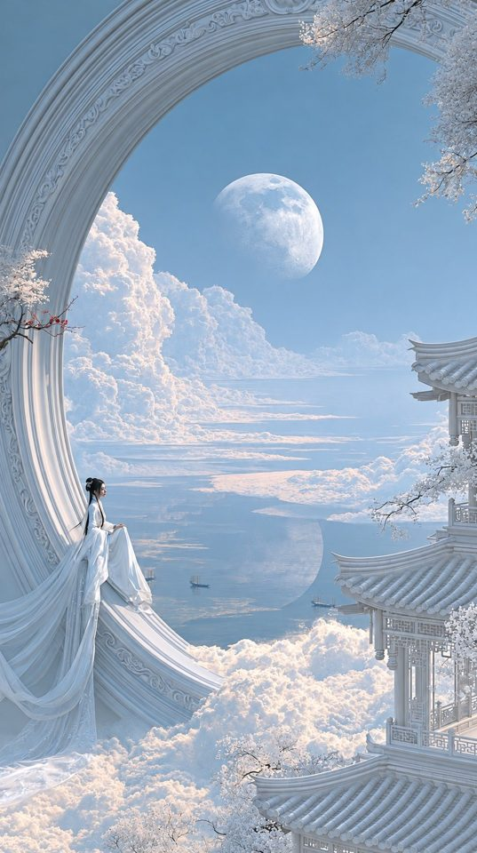

月门仙阙
白玉月洞门上坐着素衣仙子，右侧汉白玉天宫楼阁，巨大满月悬在云海之上。瓷白、冰蓝、珍珠银的单色调。
| 作者 | Zidan 子丹 @liluocheng13 |
|---|---|
| 平台 | X |
| 模型 | GPT Image (ChatGPT) |
| 点赞 | 108 |
| 发布 | 2026-10-27 |
| 画风 | 国风水墨 超现实梦境 |
| 地域氛围 | 中式 |
| 题材 | 奇幻神话 自然风光 |
| 情绪 | 浪漫心动 史诗壮阔 |
提示词 · 来自正文
ChatGPT prompt：An extraordinary masterpiece of Chinese celestial fantasy fine art, breathtaking monumental vertical composition, an enormous circular white jade moon gate dominating the left side, exquisitely carved traditional Chinese floral reliefs, intricate architectural details. An extraordinarily beautiful young Chinese celestial maiden sitting gracefully on the lower inner curve of the moon gate, positioned in the lower-left third, delicate melancholic face, elegant black hair in a traditional updo, wearing magnificent flowing ivory-white hanfu, translucent silk sleeves and extraordinarily long trailing ribbons cascading into the clouds, realistic anatomy, elegant natural posture. Magnificent traditional Chinese heavenly palace pavilions on the right, entirely constructed from luminous white Hanbaiyu marble, elaborate curved roofs, intricate carved railings, exquisite lattice windows. An immense luminous full moon floating in a clear pastel-blue sky, colossal towering clouds illuminated by soft golden-white sunlight, endless celestial ocean of clouds, distant reflective heavenly lake with tiny ancient Chinese sailing boats. Delicate white cherry blossoms framing the composition, sophisticated monochromatic palette of porcelain white, icy blue, pearl silver and subtle champagne highlights. Epic architectural scale, extraordinary atmospheric depth, ethereal volumetric lighting, delicate subsurface scattering, luminous cloud textures, refined silk embroidery, sophisticated cinematic color grading. Chinese classical painting meets European Old Master painting and contemporary fantasy fine art, Midjourney 8.2-inspired aesthetic, exceptionally rich painterly details, elegant visual hierarchy, breathtaking depth, premium artistic rendering, dreamy yet photorealistic, no CGI appearance, no plastic textures, no text, no watermark. --ar 9:16 --stylize 500 --chaos 5